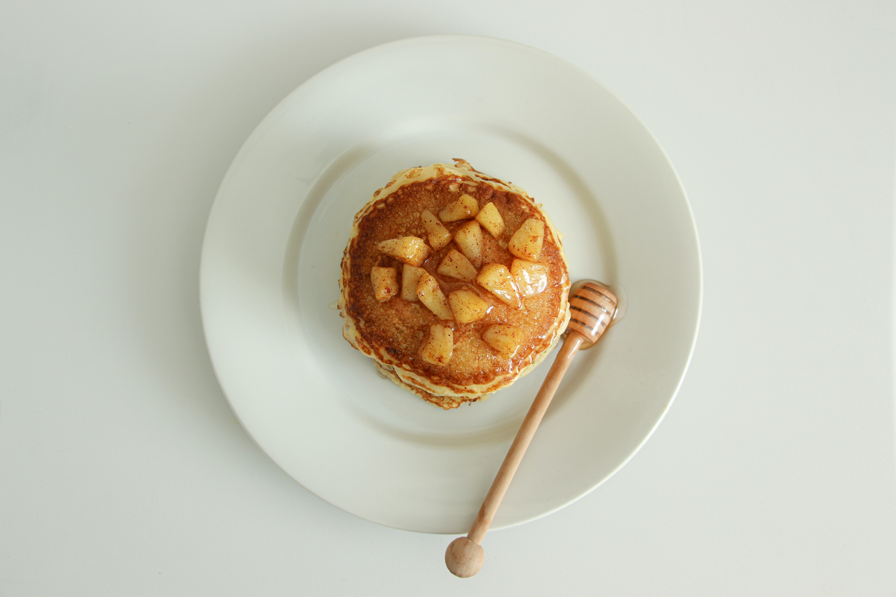

Pancake

img source: Photo by Zahra Tavakoli fard on Unsplash
Description
This recipe I found on allrecipes.com is a fluffy, sweet apple pancake. The auther of the recipe is starmaster25.
Ingredients
- 3 tablespoons butter
- 1 large apple, cored and sliced
- 1/2 cup white sugar, divided
- 2 teaspoons ground cinnamon
- 4 eggs
- 1/3 cup milk
- 1/3 cup all-purpose flour
- 1 teaspoon baking powder
- 1 teaspoon vanilla extract
Steps
- Preheat oven to 400 degrees F(200 degrees C)
- Melt butter in an oven-safe skillet over medium heat; cook and stir apple slices, about 1/4 cup sugar, and cinnamon in butter until apples are tender, about 5 minutes.
- Beat eggs, milk, flour, remaining 1/4 cup sugar, baking powder, vanilla extract, and salt in a large bowl until batter is smooth; pour batter evenly over apples.
- Bake in the preheated oven until golden brown, about 10 minutes. Run a spatula around the edges of the pancake to loosen. Invert skillet over a large plate to serve.